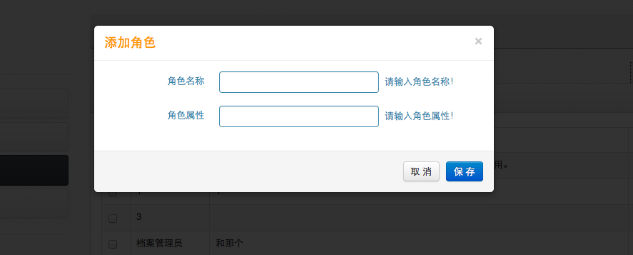
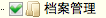
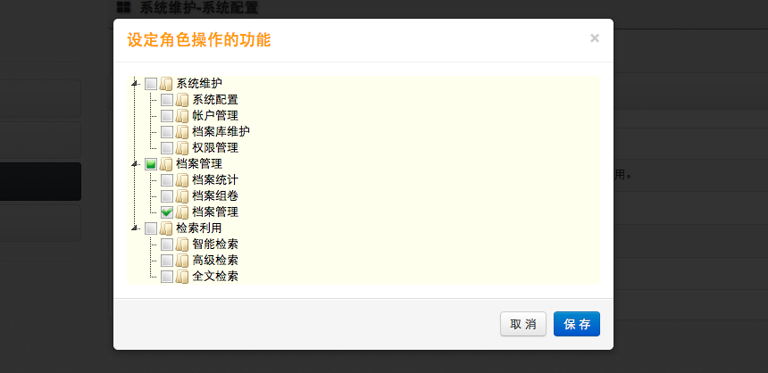

-
- 操作流程
- 点击首页功能菜单［系统维护－系统配置］，打开系统配置。
- 点击［角色管理］按钮，打开角色管理功能。
- 可以添加角色、修改角色、修改角色权限、删除角色等操作。
- 角色的作用是：角色控制功能。角色的权限关系到拥有该角色的人能操作的功能模块。给帐户或帐户组赋予角色，帐户或帐户组就拥有了该角色的权限范围。
- 添加角色
- 点击［添加］按钮弹出添加角色的框，输入角色名称和角色描述，点击保存。
-

-
- 修改角色
- 点击角色对应的［修改］按钮弹出修改角色的框，输入新角色名称和角色描述，点击保存。
- 删除角色
- 勾选角色前的框，点击［删除］按钮，弹出确认删除角色的框，确认删除后，将不能恢复，请谨慎操作，所有拥有该删除角色的帐户或帐户组的角色将被清空，需要重新设置。
- 修改角色权限
- [修改角色权限] :角色控制系统功能。赋予角色系统功能模块的权限，那么拥有该角色的帐户或帐户组，登陆系统后，就能操作相对应的模块。
- 点击角色的［权限］按钮，打开角色权限设置框，功能前打对号（）的，表示选择了该功能，去掉对号，取消功能。点击［保存］按钮。
-
